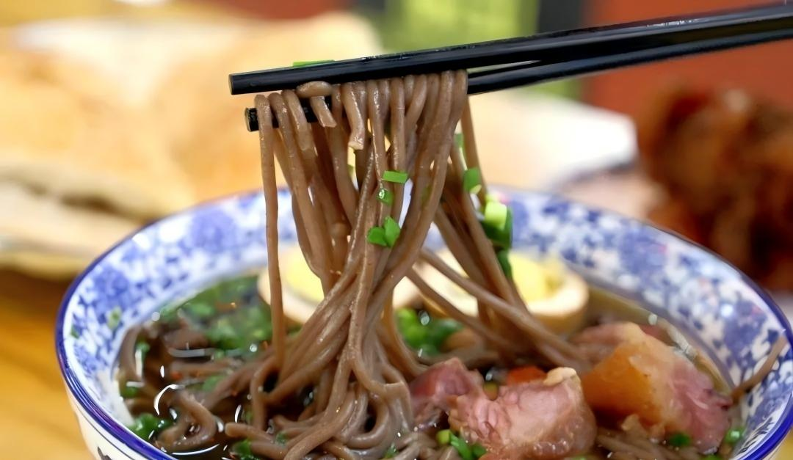
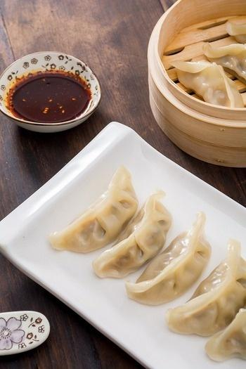
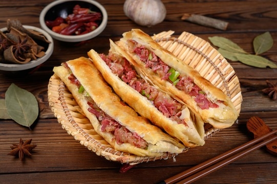

🍜 Handmade Noodles · Wheat Soul
Wheat-based food is central to northern China. Handmade noodles are simple, affordable, and satisfying. Each bowl carries the texture of local craftsmanship.
# comfort food # chewy bliss
Simple, warm, and deeply connected to daily life
Century-old recipe, fall-off-the-bone tender, perfect travel souvenir.
Crunchy outside, soft inside — pairs with everything.
A local vegetarian classic, slow-cooked in soy broth.

Wheat-based food is central to northern China. Handmade noodles are simple, affordable, and satisfying. Each bowl carries the texture of local craftsmanship.

Dumplings represent togetherness and heritage. Especially important during festivals and family gatherings, they are the taste of home in every bite.
Grilled skewers, fried noodles, stinky tofu — open until midnight.
Local favorite for hand-pulled noodles, dumplings, and braised dishes.
Try traditional snacks like buckwheat hele noodles and clay oven biscuits.


Small food stalls offer a variety of flavors — from grilled skewers to fried treats. The streets themselves become open-air kitchens.
In Shijiazhuang, sharing dishes is the norm. Don't be shy to slurp noodles — it's a compliment! Locals love garlic and vinegar as condiments. When toasting, say “Gānbēi” (bottoms up) for a friendly vibe.
Breakfast is early (6–9am), lunch is hearty, and dinner often stretches into late-night bbq sessions.
In Shijiazhuang, food is never just fuel — it's a conversation, a memory, a daily ritual. The city's food scene blends northern heartiness with modern creativity. From early breakfast stalls to late-night noodle joints, every bite tells a story.
Come hungry, leave with a deeper understanding of local life.
“The handmade noodles at that tiny stall near the train station changed my life. Chewy, savory, and only 12 yuan!”
“Jinfeng braised chicken is the real deal. Bring a box home — your family will thank you.”
Click the button to explore delicious secrets 🥟
Scan for more stories & recipes

Explore Shijiazhuang's history, nature, and local life.
🏙️ Visit City Guide →